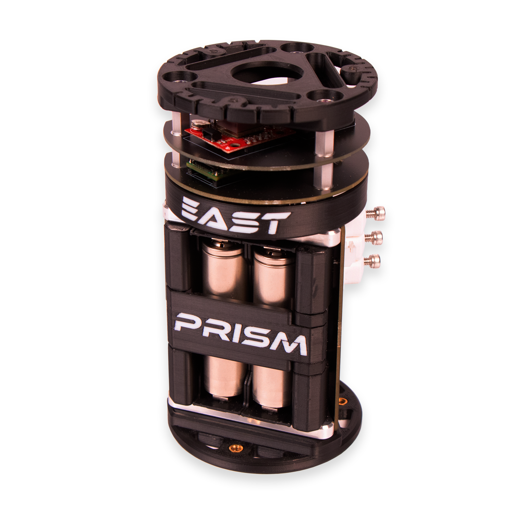
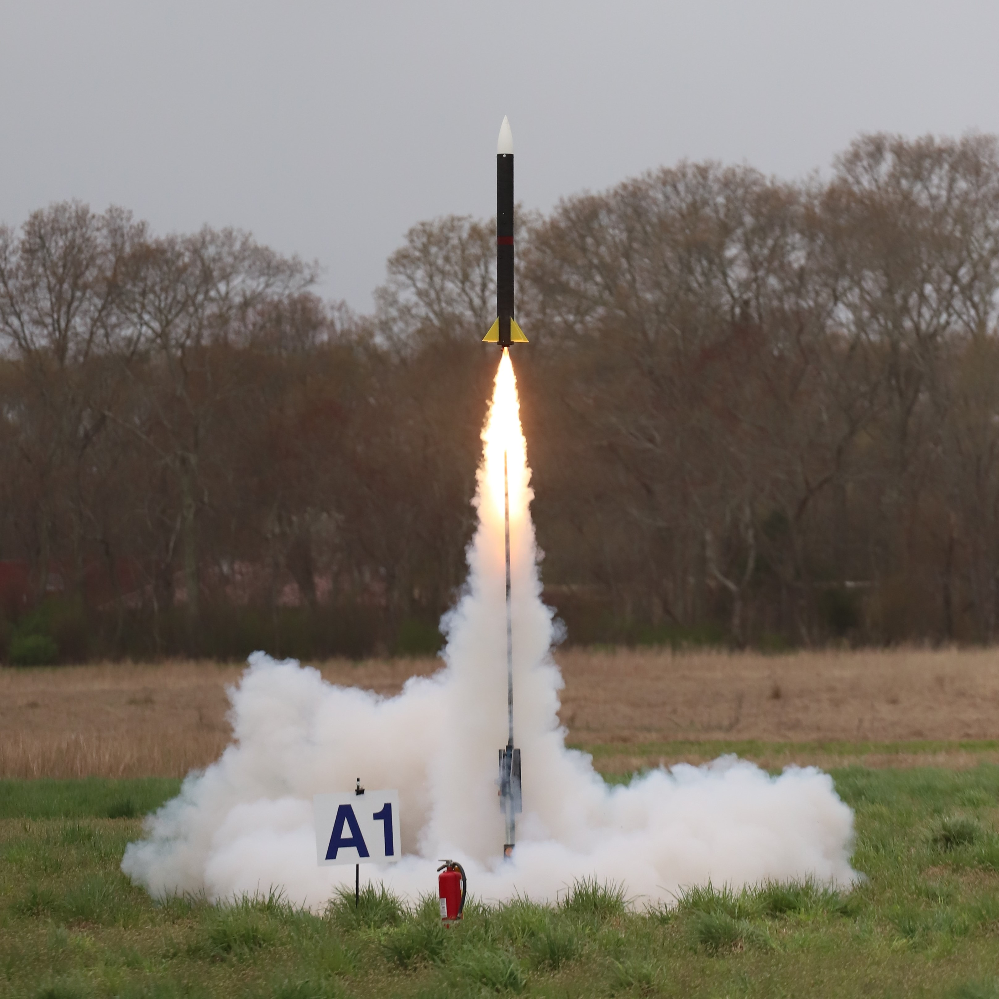
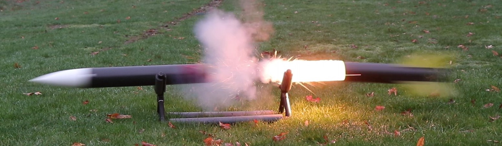

FPV Drones
Meet my fleet of self-built multirotors

Olin Rocketry is a student-led team with the goal of developing a solid-propellant rocket for the Spaceport America Cup.
As the lead avionics engineer, I directed a 5-person team in the development of a full-featured avionics suite for the rocket. The system requirements for the avionics include apogee detection, dual parachute deployment, data logging, and telemetry streaming. My concept for the system was centered around modularity in order to provide the team with a future-proof and adaptable avionics architecture.
The Primary Recovery, Instrumentation, and Sensing Module (PRISM) is a pair of PCBs that serve as a standalone flight computer. The PRISM-IO board houses the power distribution circut, mechanical bolt-switches, and two pyrogenic ignitor circuts. The PRISM-FC board features a Teensy 4.1 microcontroller, barometric altimeter, and 9-axis IMU and runs a Kalman filter for vehicle state estimation.
The Expanded Avionics, Sensing, & Telemetry (EAST) system is a series of PCBs that can be stacked together (via a standardized data bus) to provide additional functionality to PRISM. An additional microcontroller at the base of the EAST stack is responsible for controlling the various layers and also handles the bi-directional serial communication between PRISM and EAST. In our first revision of the system, EAST adds GPS capabilities as well as a long-distance radio for real-time data transmission.
The electrical system was designed in parallel with the physical avionics bay. The result is a compact and durable assembly with seamless electromechanical integration that meets our 3-inch diameter size constraint.
 

At the core, a CNC-machined aluminum frame acts as the main structure while plastic bulkheads provide a mounting interface between the avionics and the rocket. Compliant flexures provide a layer of isolation between the avionics bay and the rocket bulkheads to eliminate shock loading during parachute deployment. The battery enclosure uses an over-center latch mechanism to retain the cells while also allowing for quick battery swapping. To power and arm the device, I devised an electrical "key switch" that is built directly into the PRIMS-IO board.
The main flight computer relies on a Kalman Filter algorithm to estimate the vehicle's position and velocity using data from the IMU and barometric altimeter. This state information is then used to trigger different flight events such as launch detection and drogue and main parachute deployment. The Kalman filter was tuned through a series of ground tests and simulations. The complete system was flown on two launches to 1,600ft and 1,900ft where it detected all phases of flight and successfully ignited both pyrotechnic parachute charges! 
To make full use of the live telemetry that we transmit over radio, I developed a custom ground station software for telemetry visualization and logging. This open-source program is written in Python and provides a clean way for the team to monitor the avionics status.
Extensive testing was used to tune the Kalman filter and ensure system reliability before the first flight test. We found that putting the avionics in an elevator was a simple and effective way to test the system during the early Kalman filter development. We also conducted a series of tests where we mounted the avionics to a drone and used it to simulate launch, apogee, and landing. We also validated our custom pyrogenic ignitor circuit with ground separation testing.

Meet my fleet of self-built multirotors

A novelty CNC pick & place machine

My contibutions on the Olin Electric Motorsport formula SAE team